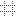

Activating the grid in Modelio diagrams makes it easier for you to align diagram elements, with a greater degree of precision.
To activate the grid in a diagram, use the ‘View grid’ and ‘Snap to grid’ tickbox of the concerned diagram ‘Symbol’ tab, or click on the  icon in the diagram toolbar.